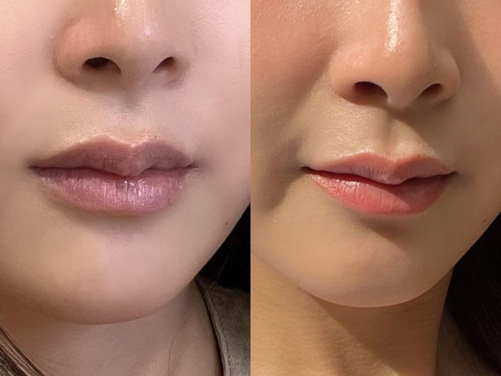

Phun Môi Màu Nude Có Đẹp Không? Hợp Với Ai?
Trong những năm gần đây, phun môi màu nude ngày càng được nhiều khách hàng yêu thích bởi vẻ đẹp nhẹ nhàng, thanh lịch và rất phù hợp với phong cách trang điểm hiện đại. Không quá nổi bật như đỏ cam hay đỏ nâu, màu nude mang đến đôi môi tự nhiên, mềm mại và tinh tế.
Tuy nhiên, đây cũng là gam màu khá kén nền môi. Nếu lựa chọn không phù hợp, màu môi có thể trở nên nhợt nhạt hoặc thiếu sức sống. Vì vậy, trước khi quyết định, bạn nên hiểu rõ màu nude có hợp với mình hay không, nền môi hiện tại có cần xử lý trước hay không và sắc độ nào giúp gương mặt tươi nhất.
Phun Môi Màu Nude Là Gì?
Màu nude là gam màu có sắc độ gần với màu môi tự nhiên. Tùy từng tông da và nền môi, màu nude có thể thiên về hồng nude, cam nude, beige nude hoặc hồng đất nude.
Sau khi hồi phục, môi thường mang lại cảm giác nhẹ nhàng, sang trọng, hiện đại và ít bị lộ dấu hiệu đã phun xăm. Đây là lý do màu nude được nhiều khách yêu thích phong cách tối giản lựa chọn.
Ai Phù Hợp Với Màu Nude?
Người có làn da sáng
Đây là nhóm phù hợp nhất với phun môi màu nude. Màu nude giúp tôn làn da, tạo vẻ đẹp tự nhiên và dễ kết hợp với nhiều phong cách trang điểm khác nhau.
Người thường xuyên makeup
Nếu bạn thường đánh nền, kẻ mắt, dùng son bóng hoặc thích layout trang điểm nhẹ nhàng, màu nude sẽ là nền môi rất đẹp để kết hợp hằng ngày.
Người yêu thích phong cách tối giản
Nếu bạn thích makeup nhẹ, phong cách Hàn Quốc, trang phục thanh lịch hoặc môi nhìn như màu tự nhiên, nude là lựa chọn rất đáng cân nhắc.

Những Trường Hợp Nên Cân Nhắc
Không phải ai cũng phù hợp với màu nude. Bạn nên được tư vấn kỹ nếu môi thâm nhiều, da ngăm hoặc môi không đều màu. Trong những trường hợp này, kỹ thuật viên có thể đề xuất sắc độ nude ấm hơn, nude pha hồng đất, nude pha cam hoặc gợi ý một gam màu khác để đạt hiệu quả thẩm mỹ tốt hơn.
Nếu nền môi quá tối nhưng vẫn cố chọn nude nhạt, màu sau bong có thể không rõ, dễ làm gương mặt thiếu sức sống. Với nền môi thâm, đôi khi cần xử lý sắc tố trước rồi mới chọn màu phù hợp.
Ưu Điểm Của Phun Môi Màu Nude
- Tự nhiên, nhẹ nhàng và không quá nổi bật.
- Phù hợp với môi trường công sở hoặc phong cách thanh lịch.
- Không dễ lỗi xu hướng như một số gam màu quá đậm.
- Dễ phối với son dưỡng, son bóng hoặc makeup hằng ngày.
- Giúp môi có nền màu mềm hơn nhưng vẫn giữ được vẻ tinh tế.
Màu Nude Có Làm Mặt Nhợt Nhạt Không?
Đây là thắc mắc rất phổ biến. Thực tế, nếu chọn đúng sắc độ theo màu da và nền môi, màu nude sẽ mang lại vẻ đẹp tinh tế. Ngược lại, nếu chọn màu quá nhạt so với làn da, gương mặt có thể trông thiếu sức sống.
Vì vậy, việc tư vấn trực tiếp trước khi phun là rất quan trọng. Kỹ thuật viên cần xem nền môi mộc, sắc tố môi, màu da, màu tóc và phong cách trang điểm thường ngày trước khi chốt màu.
Phun Môi Màu Nude Giữ Được Bao Lâu?
Thông thường, màu môi có thể duy trì từ 2 đến 5 năm, tùy thuộc vào cơ địa, chất lượng mực, tay nghề kỹ thuật viên và cách chăm sóc sau phun. Theo thời gian, màu sẽ nhạt dần tự nhiên.
Với các gam nude nhẹ, cảm giác phai màu có thể rõ hơn so với các tông đỏ hoặc cam đậm. Vì vậy, khách chọn màu nude nên chuẩn bị tâm lý rằng màu sẽ mềm, tự nhiên và không quá rực.
Cách Chăm Sóc Sau Khi Phun
Để môi lên màu đẹp và bền hơn, bạn nên dưỡng môi theo hướng dẫn, không bóc lớp bong, uống đủ nước, bảo vệ môi khi ra nắng và hạn chế hút thuốc. Trong giai đoạn môi đang hồi phục, hãy tránh tác động mạnh lên môi để màu ổn định tốt hơn.
Những Hiểu Lầm Thường Gặp
Nude chỉ hợp người da trắng?
Không hoàn toàn đúng. Nhiều người có làn da trung bình vẫn có thể lựa chọn nếu điều chỉnh sắc độ phù hợp, ví dụ nude pha cam, nude hồng đất hoặc nude ấm.
Màu nude quá nhạt?
Màu nude không nhất thiết phải nhạt bợt. Sau khi hồi phục, kỹ thuật viên sẽ cân đối sắc độ để môi tự nhiên nhưng vẫn có sức sống.
Môi thâm không làm nude được?
Một số trường hợp môi thâm vẫn có thể thực hiện sau khi được đánh giá nền môi và lựa chọn phương pháp phù hợp. Tuy nhiên, không nên tự chọn màu nếu chưa được tư vấn.
Checklist Trước Khi Chọn Màu Nude
Thích vẻ đẹp tự nhiên, nhẹ nhàng và hiện đại.
Thường xuyên trang điểm hoặc thích makeup tối giản.
Muốn môi thanh lịch, không quá nổi bật.
Được kỹ thuật viên tư vấn theo màu da và nền môi.
Chấp nhận hiệu ứng sau bong mềm hơn các màu đậm.
Câu Hỏi Thường Gặp
Nude hay hồng đất đẹp hơn?
Nếu thích phong cách nhẹ nhàng và tối giản, nude là lựa chọn phù hợp. Nếu muốn môi có chiều sâu hơn và dễ dùng với nhiều tông da, hồng đất có thể là phương án đáng cân nhắc.
Da ngăm có làm nude được không?
Có thể, nhưng cần lựa chọn sắc độ phù hợp với màu da và nền môi. Nude quá nhạt có thể làm gương mặt kém tươi.
Có cần đánh son sau khi phun không?
Không bắt buộc. Tuy nhiên, nhiều khách hàng vẫn sử dụng son bóng hoặc son dưỡng để tạo hiệu ứng căng mọng hơn.
Phun môi nude có đẹp không?
Có, nếu chọn đúng sắc độ. Màu nude đẹp theo kiểu tự nhiên, sang và tinh tế, không phải kiểu nổi bật như đỏ cam hay đỏ nâu.
Kết Luận
Màu nude là lựa chọn lý tưởng cho những ai yêu thích vẻ đẹp tự nhiên, hiện đại và tinh tế. Tuy nhiên, để đạt được kết quả như mong muốn, bạn nên lựa chọn màu dựa trên nền môi và sự tư vấn của kỹ thuật viên thay vì chỉ theo xu hướng.